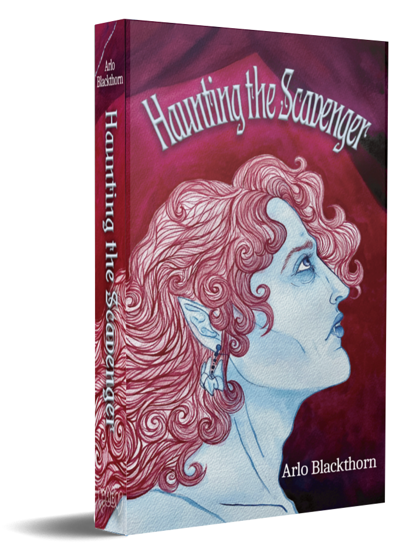

In this Gothic Horror Romance, Haunting the Scavenger, our friend Monty bites off more than he can chew in his pursuit to investigate the untimely death of his mentor, Dr. Giovanni, as he slowly becomes entranced by her only living heir, Cameron.

Monty finds his life in shambles following the sudden death of his mentor, Dr. Giovanni. Searching for work to get back on his feet (and off his friend Mina's living room floor) he finds a groundskeeper listing at the Giovanni Estate, the very location of his professor’s suicide. Now, presented with the opportunity to learn what really happened, Monty takes the job. However, upon arriving at his professor's crumbling Victorian mansion, he finds that its lone inhabitant, Cameron, is a little less than willing to share any details about their late mother.
Ignoring the warning signs, Monty sticks to his guns, even when plagued by whatever is lurking in the woods, the ghosts of regrettable actions, rattling sabers, and his growing yearning for his eccentric employer. Did the doctor really kill herself, or could there have been foul play? What monsters really haunt the shadows of 67 Blackberry Place? Is Mina's girlfriend on to something? And why does Cameron keep looking at Monty like that?
Haunting the Scavenger is a Queer Gothic Horror set in early 2000s upstate NY featuring all the classics such as a big burly "damsel in distress", the illustrious haunted Victorian mansion, vampires, a good dose of horror, steamy make-outs, sword fights, awful women's wrongs, and much more! Boys, blood, and familial trauma!
🐍Paperback🗡️

🍷Digital🦇
Also available internationally wherever you chose to buy eBooks!
Can't afford to buy a copy? Read with a library card on Hoopla!
💀Content Warnings🩸
- Graphic depictions of death, murder, blood, and gore (this is a horror story after all).
- Graphic descriptions of insects, animals, and animal death (e.g. spiders, flies, snakes, coyotes).
- Mentions of suicide.
- Physical descriptions that may be triggering for those with eating disorders.
- Mentions of disordered eating.
- Graphic depictions of child abuse (including medical torture) and familial abuse.
- Homophobia and misgendering of non-binary characters.
- Violent acts directed at cis women, non-binary people, and queer men.
- Racist behavior and slurs (Arab and Romani).
- Alcohol and tobacco use.
- Explicit depictions of alcoholism.
- Explicit depictions of sex (consensual).
- Depictions of erotic behavior under the influence of alcohol.
About the Author
Arlo Blackthorn is a queer not-so-many centuries old vampire based in woefully sunny California. He received his BFA from The School of the Art Institute of Chicago and works across many artistic disciplines. Between gallery showings and pursuing a master's in history, he manifests extra hours in the day to write. When he’s not reading Gothic horror or hunched over his keyboard, you’ll find him with a gaming controller in hand and little black cat in lap. Haunting the Scavenger is his debut novel.